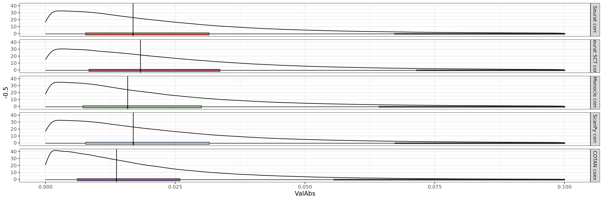

library(tidyr)
library(stringr)
library(ggplot2)
library(gghalves)
library(ggstatsplot)
library("gridExtra")
library(cowplot)
library(Matrix)
#library(COTAN)General Coex Evaluation
genesList <- list(
"NPGs"=
c("Nes", "Vim", "Sox2", "Sox1", "Notch1", "Hes1", "Hes5", "Pax6"),
"PNGs"=
c("Map2", "Tubb3", "Neurod1", "Nefm", "Nefl", "Dcx", "Tbr1"),
"hk"=
c("Calm1", "Cox6b1", "Ppia", "Rpl18", "Cox7c", "Erh", "H3f3a",
"Taf1", "Taf2", "Gapdh", "Actb", "Golph3", "Zfr", "Sub1",
"Tars", "Amacr"),
"layers" =
c("Reln","Lhx5","Cux1","Satb2","Tle1","Mef2c","Rorb","Sox5","Bcl11b","Fezf2","Foxp2")
)Import data from file
table.tot.hk <- NA
table.tot.neural <- NA
for (file in list.files("CoexData/")) {
corr <- readRDS(paste0("CoexData/",file))
corr <- as.data.frame(as.matrix(corr))
if(str_detect(file,pattern = "Cotan")){
code <- "COTAN coex"
}else if(str_detect(file,pattern = "CorrSCT")){
code <- "Seurat SCT corr."
}else if(str_detect(file,pattern = "Corr")){
code <- "Seurat corr."
}
table.hk <- as.data.frame(corr[,genesList$hk])
table.hk$Gene1 <- rownames(table.hk)
table.hk <- pivot_longer(as.data.frame(table.hk),cols = c(1:(ncol(table.hk)-1)),names_to = "Gene2")
table.hk$Method <- code
table.tot.hk <- rbind(table.tot.hk,table.hk)
table.tot.hk <- table.tot.hk[! table.tot.hk$Gene1 == table.tot.hk$Gene2,]
#Not hk
table.neural <- as.data.frame(corr[rownames(corr) %in% c(genesList$NPGs,genesList$PNGs,genesList$layers),colnames(corr) %in% c(genesList$NPGs,genesList$PNGs,genesList$layers)])
table.neural$Gene1 <- rownames(table.neural)
table.neural <- pivot_longer(as.data.frame(table.neural),cols = c(1:(ncol(table.neural)-1)),names_to = "Gene2")
table.neural$Method <- code
table.tot.neural <- rbind(table.tot.neural,table.neural)
table.tot.neural <- table.tot.neural[! table.tot.neural$Gene1 == table.tot.neural$Gene2,]
}table.tot.hk <- table.tot.hk[2:nrow(table.tot.hk),]
table.tot.hk$GeneType <- "Constitutive"
table.tot.neural <- table.tot.neural[2:nrow(table.tot.neural),]
table.tot.neural$GeneType <- "Neural"
table.tot <- rbind(table.tot.hk,table.tot.neural)
table.tot <- table.tot[!table.tot$Gene1 == table.tot$Gene2,]
identical(table.tot[table.tot$Method == "COTAN coex",]$Gene1,
table.tot[table.tot$Method == "Seurat corr.",]$Gene1 )[1] TRUEidentical(table.tot[table.tot$Method == "COTAN coex",]$Gene2,
table.tot[table.tot$Method == "Seurat corr.",]$Gene2 )[1] TRUEhead(table.tot)# A tibble: 6 × 5
Gene1 Gene2 value Method GeneType
<chr> <chr> <dbl> <chr> <chr>
1 Actb Calm1 -0.0467 COTAN coex Constitutive
2 Actb Cox6b1 0.0294 COTAN coex Constitutive
3 Actb Ppia -0.0323 COTAN coex Constitutive
4 Actb Rpl18 0.0228 COTAN coex Constitutive
5 Actb Cox7c 0.00859 COTAN coex Constitutive
6 Actb Erh 0.0127 COTAN coex Constitutivetable.tot$ValAbs <- abs(table.tot$value)
table.tot$LogValAbs <- log(table.tot$ValAbs+0.001)
table.tot$SqrValAbs <- table.tot$ValAbs**2
ggplot(table.tot,aes(x=Method,y=LogValAbs, fill=Method)) +
geom_half_violin(alpha=0.8) +
#geom_point(position = "jitter", size= 0.1,alpha = 0.3)+
geom_half_boxplot(width=0.1, alpha=0.8,side = "r") +
theme_bw()+ theme(legend.position="none")+#ylim(0,1)+
facet_grid(GeneType ~ . , space = "free_y", scales = "free")+
scale_fill_manual(values = c("#8856A7","#EDF8FB","#B3CDE3" ))
ggplot(table.tot,aes(x=Method,y=ValAbs, fill=GeneType)) +
geom_boxplot(alpha=0.8) +
#geom_hline(yintercept = -3.39)+
#geom_hline(yintercept = -1.86)+
#geom_point(position = "jitter", size= 0.1,alpha = 0.3)+
#geom_half_boxplot(width=0.1, alpha=0.8,side = "r") +
theme_bw()+ #theme(legend.position="none")+
scale_fill_manual(values = c("#8856A7","#EDF8FB","#B3CDE3" ))
ggplot(table.tot, aes(x=Method,y=ValAbs, fill=GeneType)) +
introdataviz::geom_split_violin(alpha = .4, trim = FALSE) +
geom_boxplot(width = .2, alpha = .6, fatten = NULL, show.legend = FALSE) +
stat_summary(fun.data = "mean_se", geom = "pointrange", show.legend = F,
position = position_dodge(.175)) +
scale_fill_brewer(palette = "Dark2") +
theme_minimal()
sessionInfo()R version 4.3.0 (2023-04-21)
Platform: x86_64-pc-linux-gnu (64-bit)
Running under: Ubuntu 20.04.6 LTS
Matrix products: default
BLAS: /usr/lib/x86_64-linux-gnu/blas/libblas.so.3.9.0
LAPACK: /usr/lib/x86_64-linux-gnu/lapack/liblapack.so.3.9.0
locale:
[1] LC_CTYPE=C.UTF-8 LC_NUMERIC=C LC_TIME=C.UTF-8
[4] LC_COLLATE=C.UTF-8 LC_MONETARY=C.UTF-8 LC_MESSAGES=C.UTF-8
[7] LC_PAPER=C.UTF-8 LC_NAME=C LC_ADDRESS=C
[10] LC_TELEPHONE=C LC_MEASUREMENT=C.UTF-8 LC_IDENTIFICATION=C
time zone: Europe/Berlin
tzcode source: system (glibc)
attached base packages:
[1] stats graphics grDevices utils datasets methods base
other attached packages:
[1] Matrix_1.5-4.1 cowplot_1.1.1 gridExtra_2.3 ggstatsplot_0.11.1
[5] gghalves_0.1.4 ggplot2_3.4.2 stringr_1.5.0 tidyr_1.3.0
loaded via a namespace (and not attached):
[1] utf8_1.2.3 generics_0.1.3 stringi_1.7.12
[4] lattice_0.21-8 digest_0.6.31 magrittr_2.0.3
[7] correlation_0.8.4 RColorBrewer_1.1-3 evaluate_0.20
[10] grid_4.3.0 estimability_1.4.1 mvtnorm_1.2-2
[13] fastmap_1.1.1 plyr_1.8.8 jsonlite_1.8.4
[16] rematch2_2.1.2 purrr_1.0.1 fansi_1.0.4
[19] scales_1.2.1 introdataviz_0.0.0.9003 cli_3.6.1
[22] rlang_1.1.0 munsell_0.5.0 withr_2.5.0
[25] yaml_2.3.7 statsExpressions_1.5.1 tools_4.3.0
[28] datawizard_0.7.1 coda_0.19-4 dplyr_1.1.2
[31] colorspace_2.1-0 zeallot_0.1.0 bayestestR_0.13.1
[34] paletteer_1.5.0 vctrs_0.6.1 R6_2.5.1
[37] lifecycle_1.0.3 emmeans_1.8.5 htmlwidgets_1.6.2
[40] insight_0.19.2 pkgconfig_2.0.3 pillar_1.9.0
[43] gtable_0.3.3 Rcpp_1.0.10 glue_1.6.2
[46] xfun_0.39 tibble_3.2.1 tidyselect_1.2.0
[49] rstudioapi_0.14 parameters_0.21.1 knitr_1.42
[52] farver_2.1.1 xtable_1.8-4 patchwork_1.1.2
[55] htmltools_0.5.5 labeling_0.4.2 rmarkdown_2.21
[58] compiler_4.3.0